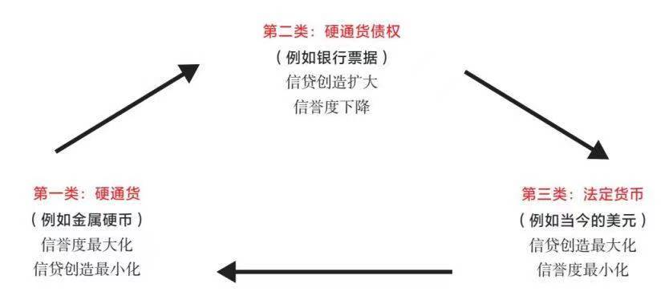

认知 014
认知之旅 day20
同步读书：《三千年文化大变局》许倬云
【长周期认知补充（二）】
今日内容简介：
- 短期债务周期：央行调控市场经济，使得各资产的数量和价格出现周期性涨跌。通常持续8年左右。
- 长期债务周期：通常持续50~100年。
六个阶段：
1.最初并不存在债务，或者债务很少，人们使用硬通货。
2.后来出现了硬通货债权票据（又称票据或纸币）。
3.后来是债务增加。
4.然后会发生债务危机、违约和货币贬值，导致印钞和与硬通货脱钩。
5.然后是法定货币，最终导致货币贬值。
6.回归硬通货。
- 三种类型的货币体系在历史上的不断转换
1.硬通货（如金属硬币）。
2.纸币（硬通货债权）。
3.法定货币。
以下内容节选整合自《原则：应对变化中的世界秩序》“第三章 货币、信贷、债务和经济活动的大周期”。
货币和信贷的控制方（即央行）通过改变货币和信贷的成本与供给来调控市场和整体经济。当经济增长过快而央行想使其放缓时，央行就会减少货币和信贷供给，促使货币和信贷成本上升。这会鼓励人们放贷，而不是借款和支出。当经济增长过慢而央行想刺激经济时，央行就降低货币和信贷成本，提供充裕的货币和信贷，鼓励人们借款、投资和/或消费。这些举措使货币、信贷、商品、服务和金融资产的数量与价格出现周期性涨跌。这些走势通常表现为短期债务周期和长期债务周期。短期债务周期起起落落，通常持续8年左右（会有出入）。持续时间取决于刺激政策需要多长时间，才能把需求提高到实体经济达到产能极限的水平。大多数人见过足够多的短期债务周期（通常被称为“经济周期”），对其有一定认知，因此他们错误地认为，债务周期将永远以这种方式持续运转。
我称之为短期债务周期，是为了区别于长期债务周期。长期债务周期通常持续50~100年（因此包括6~10个短期债务周期）。长期债务周期在人的一生中只出现一次，大多数人对其会毫无预料。因此其到来往往令人措手不及，让很多人遭受损失。我们正处于长期债务周期的后期阶段，目前的长期债务周期是1944年在新罕布什尔州的布雷顿森林设计的世界货币体系的结果，这一货币体系在1945年二战结束后付诸实施，标志着美元/美国主导的世界秩序的开始。这些长期债务周期取决于央行是否还能够有效调控。更具体地说，当央行无力通过货币和信贷增长来推动实体经济发展时，央行就不具备刺激经济的能力了。这个周期就结束了。
长期债务周期分为6个阶段。
第一阶段：最初(a)并不存在债务，或者债务很少，(b)人们使用硬通货。
通过进行债务重组和债务货币化，上个周期的债务负担基本上被消除了。考虑到这些后果（特别是通胀），人们又开始使用硬通货（例如黄金和白银，有时还有铜和其他金属，如镍）或者与硬通货挂钩的货币。例如，在德国魏玛共和国的债务和货币崩溃后，以黄金计价的资产和土地成为货币的后盾，而且货币与美元挂钩。20世纪80年代末，阿根廷比索大幅贬值后，开始与美元挂钩。
在这个阶段，硬通货很重要，因为它们的交易不需要涉及信任或信用。任何交易都可以就地结算，即使买卖双方是陌生人或冤家。有句老话说：“黄金是唯一不是他人负债的金融资产。”你从买家那里收到金币后，可以把金币熔化掉，因为它存在内在价值，你仍然可以得到几乎同样的价值，而不像债务资产（是交付价值的承诺），例如纸币（因为很容易印制，所以纸币算不上什么承诺）。在战争期间，各方不信任彼此的支付意图和能力，故而仍然使用黄金来完成交易。因此，黄金（其次是白银）既可以作为安全的交换媒介，也可以作为安全的财富贮藏手段。
第二阶段：后来出现了硬通货债权票据（又称票据或纸币）。
由于随身携带大量金属货币既有风险又不方便，而且信用创造对贷款人和借款人都有吸引力，因此一些可信赖的机构出现了，它们把货币存放在安全的地方，然后给存放人出具债权票据。这些机构后来被称为“银行”，不过最初包括人们信任的各种机构，如中国的寺庙。很快，人们将这些“货币票据”视为实际货币。毕竟，这些票据可以被兑换成有形货币，也可以直接用于购物。这种货币体系被称为挂钩货币体系，因为货币的价值与某种实物的价值挂钩，这种实物通常是硬通货，如黄金和白银。
第三阶段：后来是债务增加。
起初，硬通货债权票据的数量与银行里储存的硬通货一样多。之后，债权票据的持有者和银行共同发现了信贷和债务的奥妙。票据持有者将这些债权票据借给银行，可以得到银行支付的利息。借入这些债权票据的银行很乐意，因为它们可以把钱借给其他能支付更高利息的人，从而从中获利。从银行借来票据的人也高兴，因为他们获得了以前没有的购买力。随着资产价格和生产双双提升，整个社会皆大欢喜。由于受到所有人的青睐，这种做法逐渐盛行起来。贷款和借款日益增多，掀起了借贷热潮，以至货币债权（即债务资产）数量超过了可供购买的实际商品和服务数量。最终，货币债权远远超过银行储存的硬通货。
一旦出现以下问题，麻烦就来了：人们没有足够的收入来偿还债务，或者人们持有的债权数量（他们指望通过出售这些资产，换来购买商品和服务的货币）比商品和服务数量增长得更快，以致债务资产（如债券）无法兑换成货币以购买商品和服务。而这两个问题往往结伴而来。
关于第一个问题，我们可以把债务看作负收益和负资产，而负资产会吞噬收益（因为必须用收益来偿还债务），也会吞噬其他资产（因为只有出售其他资产，才能获得偿还债务的资金）。债务具有优先级别，也就是说，它比任何其他类别的资产都优先得到偿付，因此，如果收入和资产的价值下降，这就需要削减支出和出售资产来筹集所需的资金。如果这还不足以解决债务问题，就需要(a)进行债务重组（减少债务和债务负担；这对债务人和债权人来说都是个问题，因为一个人的债务是另一个人的资产），和/或(b)央行印钞，同时中央政府发放货币和信贷，填补收入和资产负债表上的资金缺口（这就是现今发生的情况）。
第四阶段：然后会发生债务危机、违约和货币贬值，导致印钞和与硬通货脱钩。
关于第二个问题，如果债权人认为他们不能从债务中获得足够的回报（相对于其他财富贮藏手段及商品和服务成本），上述情况就会发生。债务资产（如债券）是由投资者持有的，他们将这些资产视为财富贮藏手段，以备未来出售换取资金，然后购买商品。当债务资产持有者想要换成实物货币与实物商品和服务却发现无法转换时，挤兑就会出现，即债务资产持有者竞相将债务资产转换成货币、商品、服务和其他金融资产。
届时，无论是私人银行还是央行，都会面临这样的选择：1）要么允许资金从债务资产流出，这会推升利率，导致债务和经济问题恶化；2）要么“印钞”，发行债券，并充分购买债券，防止利率上升，以期资金流回债务资产。在这种情况下，央行不可避免地与硬通货脱钩，印发货币，并让货币贬值。因为不这样做，就会导致无法忍受的通缩性经济萧条。这个阶段的关键是，创造足够的货币和让货币贬值，从而抵消通缩带来的经济萧条，但又不至于造成通胀螺旋式上升。如果行之有效，这就会实现我所称的“和谐的去杠杆化”（我在《债务危机》一书中对此进行了更全面的阐述）。有时购债举措暂时奏效，但一旦货币债权（债务资产）与实际存在的硬通货以及可供购买的商品和服务的比率过高，银行将处于无法自救的困境，因为它没有足够的硬通货来偿付货币债权。
无论是私人银行还是央行，如果一家银行拿不出足够多的硬通货来兑付债权，就会陷入困境，但央行比私人银行有更多的选择。这是因为私人银行不能通过印钞或修改法律，减轻债务人的偿债负担，它们只能选择违约，或接受政府纾困。对央行而言，它可以选择违约，或者与硬通货脱钩，发行货币，让货币贬值。如果债务是以本国货币计价的，那么央行可以降低债权价值（例如，偿付50%~70%），但如果这些债务重组和货币贬值的规模过大，就会导致货币体系失灵乃至被摧毁。如果债务以自己无法印制的货币计价，那么最终央行也只得违约。
第五阶段：然后是法定货币，最终导致货币贬值。
央行希望尽可能延长货币和信贷周期，使其长久持续下去，因为这比其他选择要好得多。因此，当硬通货和硬通货债权的货币体系变得过于受限时，政府通常会放弃该体系，转而采用所谓的法定货币体系。法定货币体系不涉及硬通货，央行可以无限制地印制纸币，所以不会面临硬通货储备缩水而被迫违约的风险。届时，央行的风险在于，由于不再受制于有形黄金、白银或其他硬资产的供给，印钞机掌管者（即与商业银行合作的央行）不断创造更多的货币、债务资产和负债，以至超过商品和服务的供应数量。最终，持有大量债务的债权人设法出售这些债务，换取商品和服务，从而产生与银行挤兑相同的效果，导致债务违约或货币贬值。
债务票据可以按固定比率兑换成有形资产（如黄金和白银）的货币体系，可以转变成不需要这些兑换的法定货币体系。最近一次这样的转变发生在1971年8月15日的美国。这一天晚上，尼克松总统向全美发表电视讲话，向全世界宣布美元不再与黄金挂钩。如前所述，我在电视上看到这一幕时，心想股市会暴跌而乱成一片，却意外发现股市大涨。我从未见过货币贬值，所以不明白这是怎么回事。
1971年之前，美国政府将巨额资金用于军事和社会项目，即所谓的“大炮加黄油”政策。美国政府通过借款来支撑这些计划，从而产生了债务。这些债务是可以兑换成黄金的债权票据。投资者将这些债权票据作为资产来购买，因为他们可以从中赚取利息，也因为美国政府承诺，允许票据持有者把票据换成美国金库中的黄金。随着美国的支出和预算赤字的增长，美国政府不得不发行更多的债务（即创造更多可以兑换成黄金的债权票据），但银行里的黄金数量并没有增加。精明的投资者可以看出，尚未兑付的黄金债权数量远远超过银行里的黄金数量。他们意识到，如果这种情况继续下去，那么美国必将违约。于是，他们拿着这些黄金债权去兑换黄金。当然，美国政府是世界上最富有、最强大的政府，它会违背承诺、拒付黄金的想法在当时似乎不太可信。因此，尽管大多数人对尼克松的声明及其对市场的影响感到很惊讶，但那些了解货币和信贷运作机制的人并不感到意外。
当信贷周期达到极限时，为了维持经济运行，中央政府及央行会创造大量债务，还会印钞，并用于购买商品、服务和投资资产，这是合乎逻辑的典型对策。这就是2008年全球金融危机期间的做法，当时利率已降为零，不能再下调了。2020年，为了应对新冠肺炎疫情造成的经济危机，政府也大规模地采取了这一举措。这也是美国政府应对1929—1932年的债务危机的做法，当时利率也同样降为零。在我撰写本书的时候，债务和货币的规模超过二战以来的任何时候。
需要明确的是，央行印钞并发放给民众用于消费，而不是用于增加债务的支出，这并非没有好处。这笔资金可以像信贷一样用于消费，但实际上（而非理论上）并不需要偿还。如果把增印的货币用于生产性活动，这种加快货币增长（而不是加快信贷/债务增长）的做法就并无不妥。风险在于不这么做。如果央行过度印钞，而未将增印的货币用于生产性活动，人们就不再把货币资产作为财富贮藏手段，而将财富转入其他资产。
央行通过印钞和购买金融资产（以债券为主），将利率保持在低位，从而刺激借款和消费，鼓励债券持有者出售债券，也鼓励投资者、企业和个人利用低利率借款，投资于回报率更高的资产，通过负担得起的月供购买期望得到的东西。
这会导致央行继续印钞，购买更多债券，在某些情况下，也购买其他金融资产。这一做法通常会显著推高金融资产价格，却不能有效地将资金、信贷和购买力送到最需要的人手中。这就是2008年的状况，2020年新冠肺炎疫情引发危机之前的大部分时间也都是如此。当央行印钞和购债未能把资金和信贷送到所需之处时，中央政府就从央行借钱（央行通过印钞提供资金），再把资金用于所需之处。美联储在2020年4月9日宣布了类似的计划。这种印钞购债做法（称为“债务货币化”）将财富从富人转移到有需要的群体。从政治角度来说，这比征税容易接受多了（因为征税会得罪纳税人）。这就是为什么央行最终会选择印钞，并让货币贬值。
当政府大量印钞和购债时，货币和债务的价值就会下降。这实质上是对货币和债券持有人征税，减轻债务人和借款人的负担。这种情况发展到一定程度时，货币和债务资产持有者就会意识到真实情况。于是，他们设法出售债务资产和/或借入廉价贷款，再举借可以通过廉价贷款来偿还的债务。他们还常常把财富转移到其他财富贮藏手段上，比如黄金、某些类别的股票或没有这些问题的其他国家。在这种情况下，央行通常会继续印钞，直接或间接地购买债券（例如，让银行代其购买），并禁止资金流入通胀对冲资产、其他货币和其他地方。
在这种“通货再膨胀”时期，决策者要么刺激新一轮货币和信贷扩张，为新一轮经济扩张提供资金（有利于股票），要么让货币贬值，产生货币通胀（有利于通胀对冲资产，如黄金、大宗商品和通胀挂钩债券）。在长期债务周期的早期阶段，未偿债务的数额不多，通过降息刺激经济的空间较大（如果央行无法降息，就增印货币和购买金融资产），信贷和经济出现良性增长的可能性较大。而在长期债务周期的后期阶段，债务数额较大，刺激经济的空间较小，伴随着经济疲弱而出现货币通胀的可能性明显加大。
尽管人们趋于相信货币基本上会永远存在，“现金”是可以持有的最安全的资产，但是事实并非如此。所有货币都会贬值甚至消亡。一旦出现这种情况，现金和债券（即获得货币的承诺）就会贬值甚至变得一文不值。这是因为大规模印钞、降低债务价值是减轻或消除债务负担的最简便方式。只有充分减轻或消除债务负担，信贷/债务扩张周期才能重新启动。
正如我在《债务危机》一书中详细阐述的那样，要想使债务和负债相对于偿债所需的收入和现金流下降，决策者可以使用以下4种工具：
1.财政紧缩（减少支出）；
2.债务违约和重组；
3.将资金和信贷从富人向贫困者转移（如增税）；
4.印钞并使货币贬值。
出于逻辑原因，这些政策工具通常从一个发展到下一个。
- 财政紧缩具有通缩性，不会持续太久，因为这一做法过于痛苦。
- 债务违约和重组也具有通缩性，也很痛苦，因为价值减少甚至归零的债务亦是某些人的资产。因此，违约和重组对债务人和债权人来说都很痛苦。债务人破产，资产被收走；债权人因债务减计而遭受财富损失。
- 将资金和信贷从富人转移到贫困者（即通过对富人增税进行财富再分配），这一做法虽然具有一定的政治挑战性，但比前两种做法更容易忍受，通常是解决方案的一个选项。
- 与其他做法相比，印钞是最简便、最不被人了解、最常见的主要债务重组手段。实际上，大多数人认为这种做法利大于弊，因为：
- 印钞有助于缓解债务压力；
- 在提供金融财富的过程中，难以分辨出财富被收走的任何受害方（尽管他们是货币和债务资产的持有者）；
- 在大多数情况下，印钞拉动资产价格上涨，因为人们根据货币来衡量自身财富，而此时的货币不断贬值，因此人们好像变得更富裕。
这正是新冠肺炎疫情危机期间的情况，政府和央行发放大量资金和贷款。请注意，此时你听不到任何人抱怨货币和信贷创造。事实上，如果政府不提供更多的资金和贷款，就会被视为小气和残忍。几乎没有人意识到，政府实际上并不拥有这些资金。政府并非堆满了资金的富有的实体，而只是所有人的集合，到头来人们必须为政府创造和发放的资金买单。现在让我们来想象一下，假如政府官员为了平衡预算而需要削减开支，并要求人们也这么做，导致许多人破产，人们会怎么说。如果政府设法通过增税进行财富再分配，把财富从富人转移到贫困者手中，那么人们又会怎么说。从政治角度来说，比起任何其他选项，这种提供资金和信贷的选项更容易被接受。
第六阶段：回归硬通货。
在极端情况下，如果做得太过火了，就是说央行过度增印法定货币，债权人就会出售债务资产，引发上文所述的银行挤兑现象，最终导致货币和信贷的价值下降，促使人们逃离现金和债务（如债券）。
在债务周期的这一阶段，巨大的贫富和价值观差距通常造成经济压力，导致税收上涨、贫富矛盾激化。于是，富人想把财富换成硬资产、外币，或转移到其他国家。当一个国家面临债务、货币和投资外逃时，其统治者自然想要加以阻止。因此，政府会采取各种措施，使人们更难投资于黄金（例如，取缔黄金的交易权和所有权）、外币（禁止外币交易）和外国资产（实施外汇管制，防止资金外流）。最终，政府通过提供大量资金和廉价贷款，基本上消除了债务，但货币和债务的价值也随之下降。
如果货币贬值和债务违约变得过于极端，货币和信贷体系就会崩溃。届时，政府通常会被迫回归某种形式的硬通货，重建人们对货币价值作为财富贮藏手段的信心。政府经常（但并非总是）将货币与黄金或某种硬通货挂钩，并允许新货币持有者将其转换为硬通货。例如，在过去几十年中，许多弱势货币国家将其货币与美元挂钩，或者干脆把自己的整个经济美元化（即把美元作为本国的交换媒介和财富贮藏手段）。
综上所述，在长期债务周期的早期，未偿债务不多，持有赚取利息的债务资产通常带来回报。但是，到了周期的后期，未偿债务大量积累，濒临违约或者贬值，持有债务的风险超过所得的利息。
因此，持有债务（例如债券）有点儿像手握一颗定时炸弹，它在嘀嗒作响时好比债务的积累，但一旦停下来就会把你炸得粉碎。正如我们所见，这种大爆炸（即发生重大违约或货币大幅贬值）每50~100年就发生一次。
如果了解债务周期发生的时间表，每个人就都可以理性地为之做好准备。具有讽刺意味的是，对大多数人来说，债务越濒临崩溃（此时的未偿债权与硬通货和有形财富的比率最大），境况越危险，人们往往越感觉安全。这是因为他们一直持有债务，享受着债务带来的回报，而距离上一次债务危机的时间越长，人们对它的记忆就越淡，尽管持有债务的风险上升、回报下降。要想正确评估持有债务这颗定时炸弹的风险和回报，我们就必须时刻注意到需要偿还的债务与可供偿还的硬通货的比率、需要支付的债务金额与债务人的现金流的比率，以及投资者获得的利息回报。
长期债务周期小结
几千年来，世界上一直存在三种类型的货币体系。
第一类：硬通货（如金属硬币）。
第二类：纸币（硬通货债权）。
第三类：法定货币。
- 硬通货是最具约束性的货币体系。除非作为货币的金属或其他具有内在价值的大宗商品的供给增加，否则货币无法创造。
- 在第二类货币体系中，货币和信贷更容易创造，因而硬通货债权与实际持有的硬通货的比率会上升，最终导致银行发生“挤兑”。结果是违约，银行关门，储户失去他们的硬资产和/或货币债权贬值，这意味着储户拿回来的钱少了。
- 在第三类货币体系中，政府可以自由创造货币和信贷，只要人们对货币还有信心，这种体系就一直运营；一旦人们对货币失去信心，这种体系就会失灵。
纵观历史，各国在这些不同的货币体系之间进行转换，而转换背后的原因也是合乎逻辑的。无论是为了应对债务和战争，还是解决其他问题，如果一个国家需要的货币和信贷超过现有的水平，自然就会从第一类货币体系转到第二类，或者从第二类转到第三类，以便更灵活地发行货币。然而，创造过多的货币和债务会降低其价值，使人们不再将债务和货币作为财富贮藏手段，转而投资于硬资产（如黄金和白银）和其他货币。这通常发生在贫富冲突或战争期间，届时人们通常也想离开这个国家。只有重建人们对货币作为财富贮藏手段的信心，国家才能恢复信贷市场。

这一债务大周期通常持续50~100年，以债务重组和货币体系本身重组而结束。重组过程中的突发阶段（即债务和货币危机时期）通常很短，只持续几个月到三年，时间的长短取决于政府的行动速度。然而，这些重组带来的连锁效应可能是持久的。例如，一种货币失去储备货币地位时，其影响是深远的。
每一类货币体系中通常出现2~4次大规模债务危机（大到足以引发银行危机，造成30%或更多的债务减记或贬值，但不足以导致货币体系崩溃）。近半个世纪以来，我在许多国家都进行投资，经历过几十场债务危机。这些危机都遵循同样的运行模式，我在《债务危机》一书中进行了更深入的阐述。